- 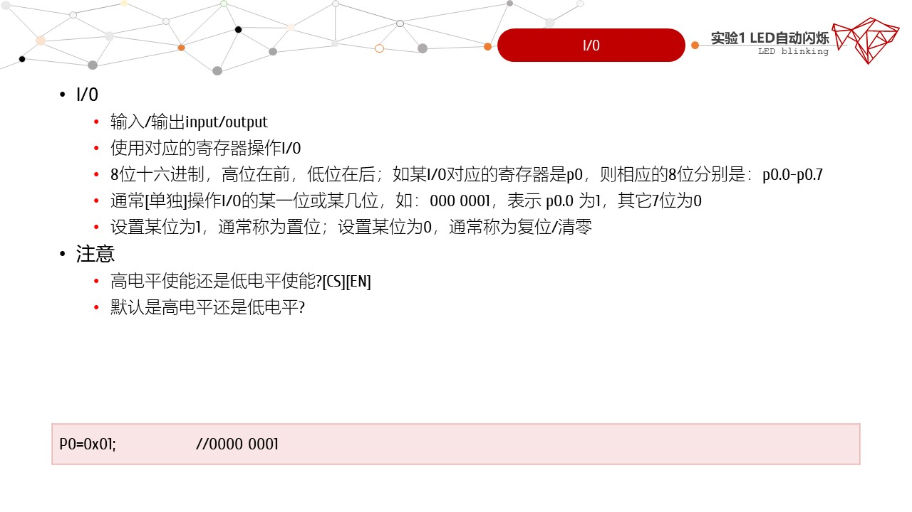
- 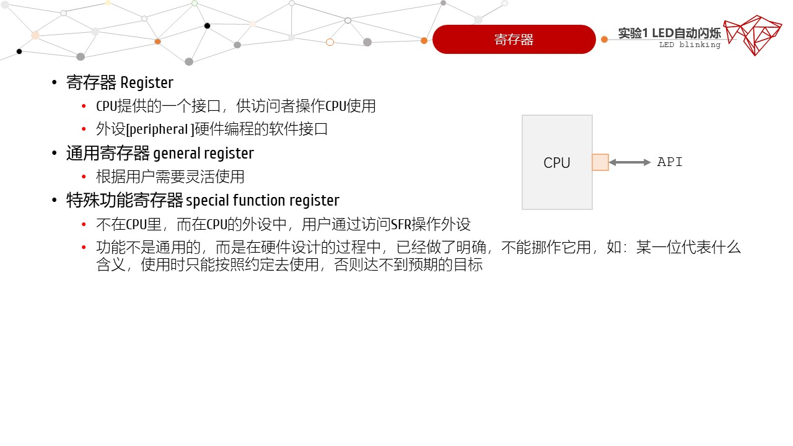
- 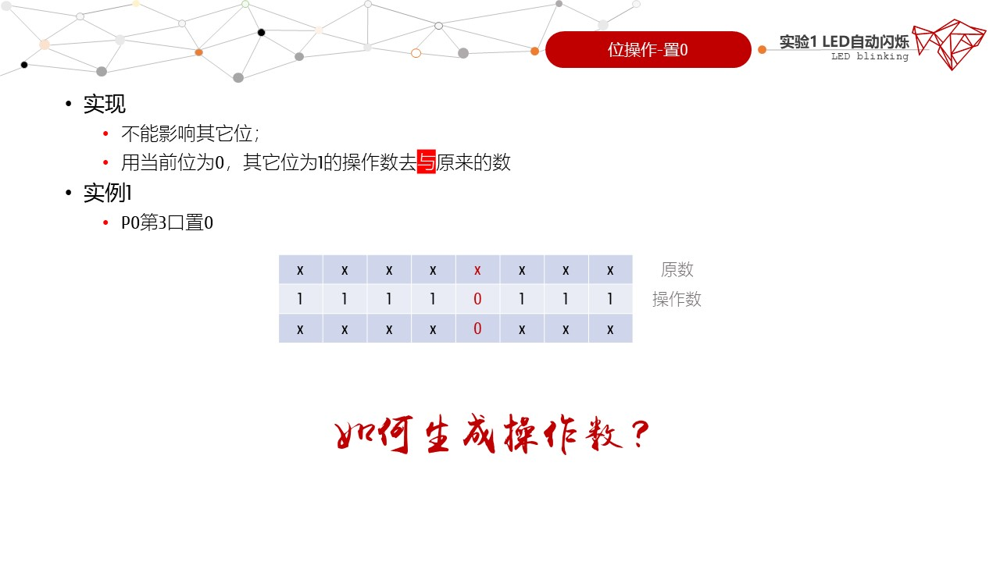
- 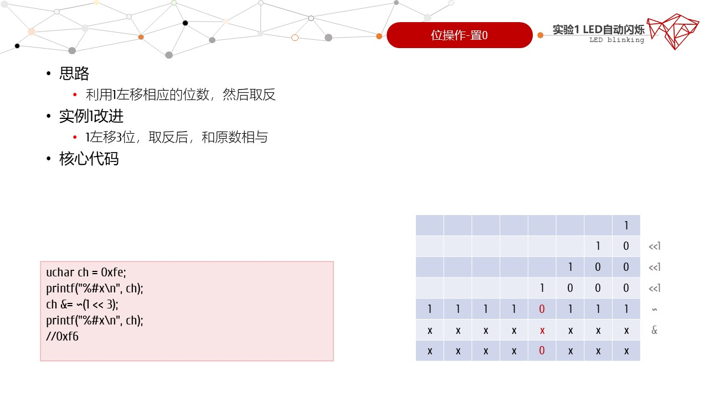
- 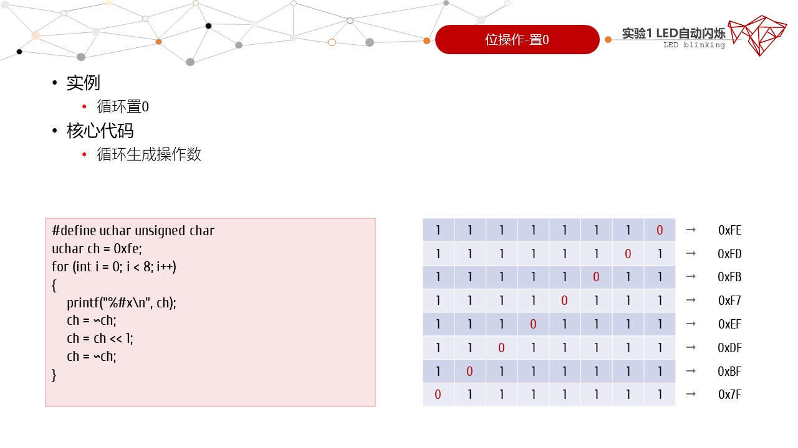
- 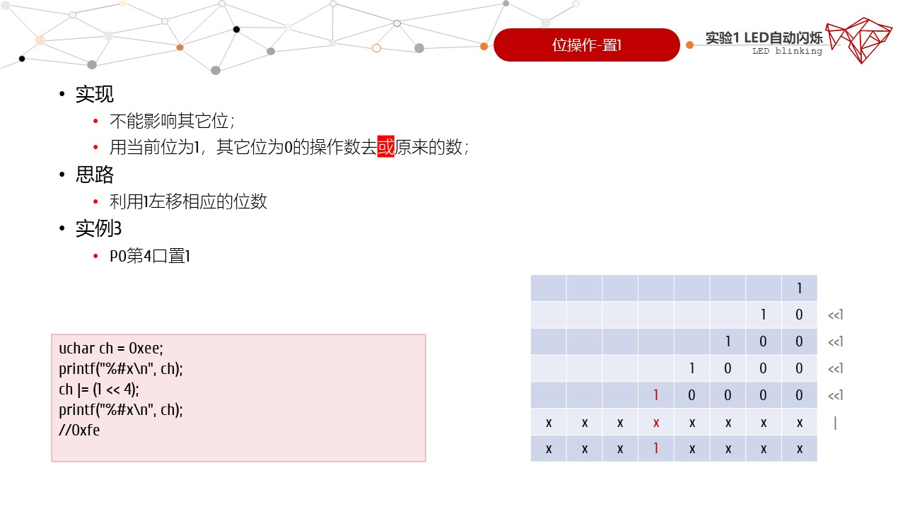
- 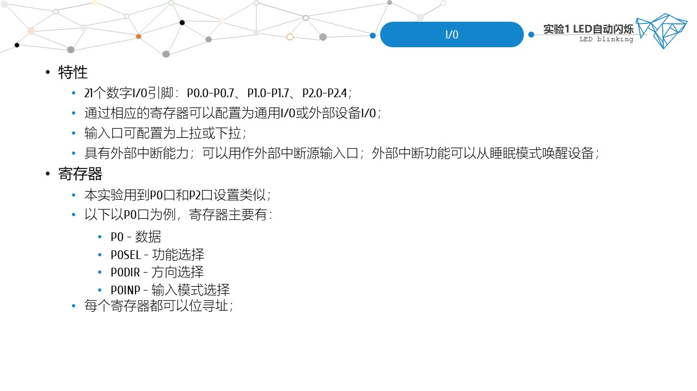
- 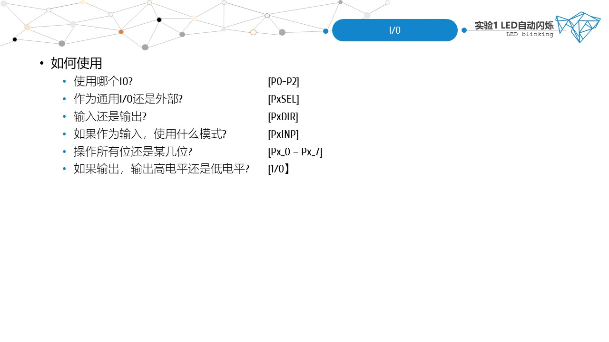
- 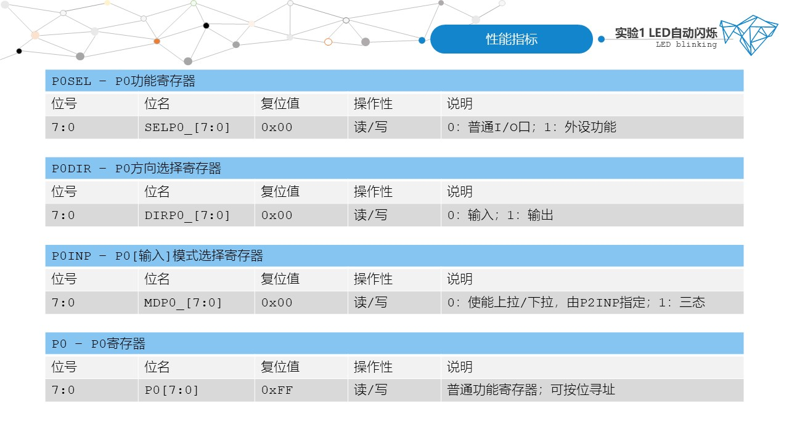
- 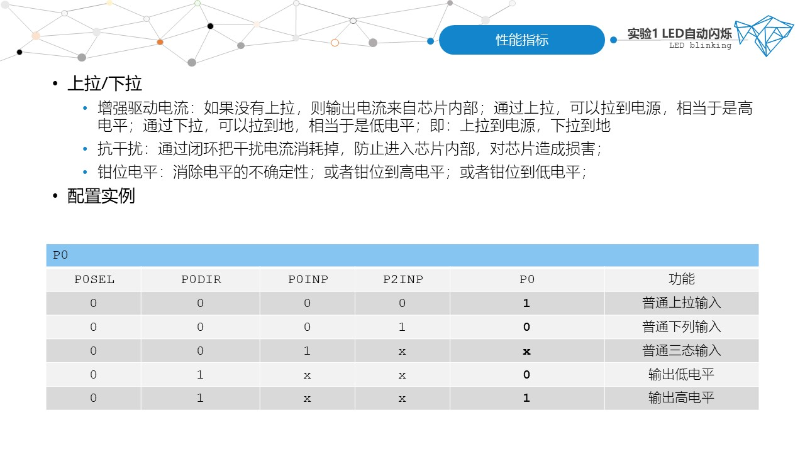
- 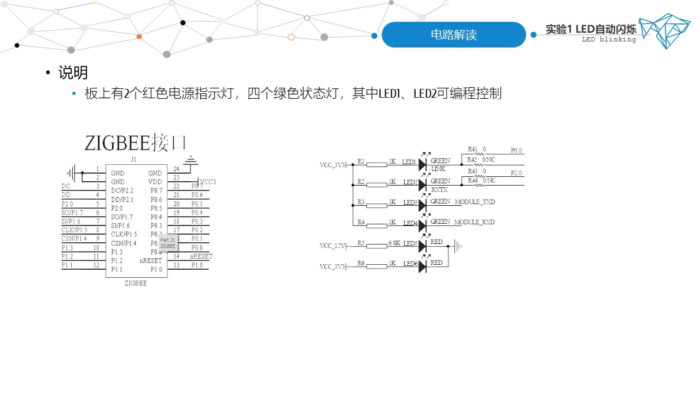
- 实操部分
- 实验目的
- 1. 掌握CC2530的IO口寄存器设置；
- 2. 掌握LED自动闪烁的编程方法；
- 实验内容
- 在IAR集成开发环境中编写LED自动闪烁程序，配合节点板实现LED的自动闪烁；
- 预备知识
- 1. 了解C语言的基本知识；
- 2. 了解IAR中编写和调试程序的方法；
- 实验需求
- 安装IAR和相关驱动的个人PC1台
- mini USB线1根
- 仿真器CC Debugger1根
- ZigBee通用节点板1块
- 实验现象
- 节点板右下角两个绿色LED灯循环闪烁
- 实验步骤
- 1.创建IAR工作空间；
- 2.创建基于C的IAR工程；
- 3.编辑代码并调试；可参考提供的源码，调试应无差错、无告警；
- 4.试验箱上电；使用mini USB分别连接CC Debugger和PC；并将仿真器CC Debugger的另外一端和ZigBee通用节点板上的JTAG插座相连；
- 5.按下仿真器CC Debugger的复位按钮RESET，绿灯常亮表示模块连接成功，可以往芯片中烧写程序；每次烧写程序都需要复位，确保仿真器是绿灯状态；
- 6.在IAR中点击下载并调试按钮download and debug(CTRL+D)烧写程序；
- 7.在IAR的调试窗口中，点击[全速]运行：观察LED的亮、灭变化；
- 开发过程中，请注意CTRL+S保存项目！
- 参考源码
-
/*******************************************************************************
* OSC = Default (reset) 16MHz RC
********************************************************************************
* 编译器：
* IAR Assembler for 8051 7.51A/W32
* IAR C/C++ Compiler for 8051 7.51A
*
* 文 件 名: main.c
* 目标器件: cc2530
* 编 写: DaTai ban
* 修 订: 2010-9-15
* 版 本: 1.0
* 描 述:
* DTD253_EMK. 开发板例程。
* 让开发板上的四个LED闪烁。
*
*******************************************************************************/
#include "ioCC2530.h" // 申明该文件中用到的头文件
void delay(void);
/******************************************************************************
* @fn main
*
* @brief
* Main function of application example. Flash 4 LEDs
*
* Parameters:
* @param void
* @return void
******************************************************************************/
void main( void )
{
P0DIR |= 0x01; // 设置P0.0为输出方式
P2DIR |= 0x01; // 设置P2.0为输出方式
while(1)
{
P0_0 = 0; // 点亮LED
P2_0 = 0;
delay(); // 延时
P0_0 = 1; // 熄灭LED
P2_0 = 1;
delay();
}
}
/******************************************************************************
* @fn delay
*
* @brief
* 延时函数.
*
* Parameters:
*
* @param void
*
* @return void
*
******************************************************************************/
void delay(void) //延时时间约400ms
{
unsigned int i;
unsigned char j;
for(i=0;i <1500;i++)
{
for(j=0;j<200;j++)
{
asm("NOP");
asm("NOP");
asm("NOP");
}
}
}
- 实验阶段
- 体验阶段：利用提供的源码，完成编译、烧写、执行，观察实验现象；
- 提升阶段：请使用宏和函数优化代码，使其符合模块化开发，同时可读性更强；
- 实验报告
- 1. 根据实操部分的内容，完成点灯项目；
- 2. 以纸质的形式提交实验报告；
- 3. 论文格式请参照范文[点击下载]。
- 优化代码参考
- 主文件main.c
-
/**************************************************************************
* Title LED blinking
* Name cnplaman
* Unit pla54414
* Date 2022-05-10
* Tips 函数的封装
*************************************************************************/
#include "ioCC2530.h"
#include "./config.h"
#include "../lib/delay.h"
#include "./led.h"
void main( void )
{
initLED();
LED();
}
- 配置文件config.h[注意文件路径]
-
#ifndef _config_h
#define _config_h
#define BV(n) (1<<(n))
#define LED1 P0_0
#define LED2 P2_0
#define ON 0
#define OFF 1
#endif
- 头文件delay.h[注意文件路径]
-
#ifndef _delay_h
#define _delay_h
void delay( unsigned int duration )
{
unsigned int i, j;
for( i = 0; i < duration; i++ )
{
for( j = 0; j < 200; j++ );
}
}
#endif
- 头文件led.h[注意文件路径]
-
#ifndef _led_h
#define _led_h
void initLED( void )
{
// P0DIR |= 0x01;
// P2DIR |= 0x01;
P0DIR |= BV( 0 ); //0 for input；1 for output
P2DIR |= BV( 0 );
P0SEL &= ~BV( 0 ); //0 for GPIO；1 for peripheral
P2SEL &= ~BV( 0 );
}
void LED( void )
{
while( 1 )
{
LED1 = ON; //led is on
LED2 = OFF; //led is off
delay( 2000 );
LED1 = OFF; //led is off
LED2 = ON; //led is on
delay( 2000 );
}
}
#endif